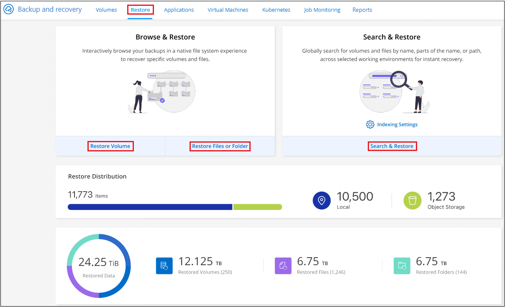
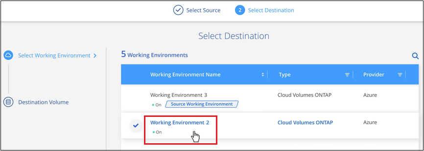
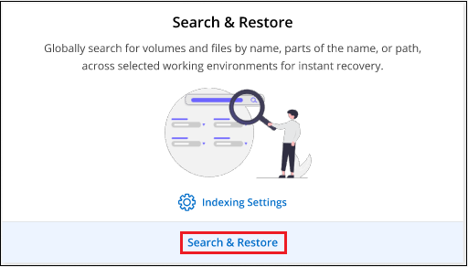

Release notes
Release notes
Restore ONTAP data from backup files
 Suggest changes
Suggest changes
Backups of your ONTAP volume data are available from the locations where you created backups: Snapshot copies, replicated volumes, and backups stored in object storage. You can restore data from a specific point in time from any of these backup locations. You can restore an entire ONTAP volume from a backup file, or if you only need to restore a few files, you can restore a folder or individual files.
-
You can restore a volume (as a new volume) to the original working environment, to a different working environment that's using the same cloud account, or to an on-premises ONTAP system.
-
You can restore a folder to a volume in the original working environment, to a volume in a different working environment that's using the same cloud account, or to a volume on an on-premises ONTAP system.
-
You can restore files to a volume in the original working environment, to a volume in a different working environment that's using the same cloud account, or to a volume on an on-premises ONTAP system.
A valid BlueXP backup and recovery license is required to restore data from backup files to a production system.
To summarize, these are the valid flows you can use to restore volume data to an ONTAP working environment:
-
Backup file → restored volume
-
Replicated volume → restored volume
-
Snapshot copy → restored volume
The Restore Dashboard
You use the Restore Dashboard to perform volume, folder, and file restore operations. You access the Restore Dashboard by clicking Backup and recovery from the BlueXP menu, and then clicking the Restore tab. You can also click > View Restore Dashboard from the Backup and recovery service from the Services panel.

|
BlueXP backup and recovery must already be activated for at least one working environment and initial backup files must exist. |

As you can see, the Restore Dashboard provides 2 different ways to restore data from backup files: Browse & Restore and Search & Restore.
Comparing Browse & Restore and Search & Restore
In broad terms, Browse & Restore is typically better when you need to restore a specific volume, folder, or file from the last week or month — and you know the name and location of the file, and the date when it was last in good shape. Search & Restore is typically better when you need to restore a volume, folder, or file, but you don't remember the exact name, or the volume in which it resides, or the date when it was last in good shape.
This table provides a feature comparison of the 2 methods.
| Browse & Restore | Search & Restore |
|---|---|
Browse through a folder-style structure to find the volume, folder, or file within a single backup file. |
Search for a volume, folder, or file across all backup files by partial or full volume name, partial or full folder/file name, size range, and additional search filters. |
Does not handle file recovery if the file has been deleted or renamed, and the user doesn't know the original file name |
Handles newly created/deleted/renamed directories and newly created/deleted/renamed files |
No additional cloud provider resources required |
When you restore from the cloud, additional bucket and public cloud provider resources required per account. |
No additional cloud provider costs required |
When you restore from the cloud, additional costs are required when scanning your backups and volumes for search results. |
Quick restore is supported. |
Quick restore is not supported. |
This table provides a list of valid restore operations based on the location where your backup files reside.
| Backup Type | Browse & Restore | Search & Restore | ||||
|---|---|---|---|---|---|---|
Restore volume |
Restore files |
Restore folder |
Restore volume |
Restore files |
Restore folder |
|
Snapshot copy |
Yes |
No |
No |
Yes |
Yes |
Yes |
Replicated volume |
Yes |
No |
No |
Yes |
Yes |
Yes |
Backup file |
Yes |
Yes |
Yes |
Yes |
Yes |
Yes |
Before you can use either restore method, make sure you have configured your environment for the unique resource requirements. Those requirements are described in the sections below.
See the requirements and restore steps for the type of restore operation you want to use:
Restore ONTAP data using Browse & Restore
Before you start restoring a volume, folder, or file, you should know the name of the volume from which you want to restore, the name of the working environment and SVM where the volume resides, and the approximate date of the backup file that you want to restore from. You can restore ONTAP data from a Snapshot copy, a replicated volume, or from backups stored in object storage.
Note: If the backup file containing the data that you want to restore resides in archival cloud storage (starting with ONTAP 9.10.1), the restore operation will take a longer amount of time and will incur a cost. Additionally, the destination cluster must also be running ONTAP 9.10.1 or greater for volume restore, 9.11.1 for file restore, 9.12.1 for Google Archive and StorageGRID, and 9.13.1 for folder restore.
|
|
The High priority isn't supported when restoring data from Azure archival storage to StorageGRID systems. |
Browse & Restore supported working environments and object storage providers
You can restore ONTAP data from a backup file that resides in a secondary working environment (a replicated volume) or in object storage (a backup file) to the following working environments. Snapshot copies reside on the source working environment and can be restored only to that same system.
Note: You can restore a volume from any type of backup file, but you can restore a folder or individual files only from a backup file in object storage at this time.
| From Object Store (Backup) | From Primary (Snapshot) | From Secondary System (Replication) | To Destination Working Environment |
|---|---|---|---|
Google Cloud Storage |
Cloud Volumes ONTAP in Google |
Cloud Volumes ONTAP in Google |
NetApp StorageGRID |
On-premises ONTAP system |
On-premises ONTAP system |
To on-premises ONTAP system |
ONTAP S3 |
For Browse & Restore, the Connector can be installed in the following locations:
-
For Google Cloud Storage, the Connector must be deployed in your Google Cloud Platform VPC
-
For StorageGRID, the Connector must be deployed in your premises; with or without internet access
-
For ONTAP S3, the Connector can be deployed in your premises (with or without internet access) or in a cloud provider environment
Note that references to "on-premises ONTAP systems" includes FAS, AFF, and ONTAP Select systems.
|
|
If the ONTAP version on your system is less than 9.13.1, then you can't restore folders or files if the backup file has been configured with DataLock & Ransomware. In this case, you can restore the entire volume from the backup file and then access the files you need. |
Restore volumes using Browse & Restore
When you restore a volume from a backup file, BlueXP backup and recovery creates a new volume using the data from the backup. When using a backup from object storage, you can restore the data to a volume in the original working environment, to a different working environment that's located in the same cloud account as the source working environment, or to an on-premises ONTAP system.
When restoring a cloud backup to a Cloud Volumes ONTAP system using ONTAP 9.13.0 or greater or to an on-premises ONTAP system running ONTAP 9.14.1, you'll have the option to perform a quick restore operation. The quick restore is ideal for disaster recovery situations where you need to provide access to a volume as soon as possible. A quick restore restores the metadata from the backup file to a volume instead of restoring the entire backup file. Quick restore is not recommended for performance or latency-sensitive applications, and it is not supported with backups in archived storage.
|
|
Quick restore is supported for FlexGroup volumes only if the source system from which the cloud backup was created was running ONTAP 9.12.1 or greater. And it is supported for SnapLock volumes only if the source system was running ONTAP 9.11.0 or greater. |
When restoring from a replicated volume, you can restore the volume to the original working environment or to a Cloud Volumes ONTAP or on-premises ONTAP system.

As you can see, you'll need to know the source working environment name, storage VM, volume name, and backup file date to perform a volume restore.
The following video shows a quick walkthrough of restoring a volume:
-
From the BlueXP menu, select Protection > Backup and recovery.
-
Click the Restore tab and the Restore Dashboard is displayed.
-
From the Browse & Restore section, click Restore Volume.

-
In the Select Source page, navigate to the backup file for the volume you want to restore. Select the Working Environment, the Volume, and the Backup file that has the date/time stamp from which you want to restore.
The Location column shows whether the backup file (Snapshot) is Local (a Snapshot copy on the source system), Secondary (a replicated volume on a secondary ONTAP system), or Object Storage (a backup file in object storage). Choose the file that you want to restore.

-
Click Next.
Note that if you select a backup file in object storage, and ransomware protection is active for that backup (if you enabled DataLock and Ransomware Protection in the backup policy), then you are prompted to run an additional ransomware scan on the backup file before restoring the data. We recommend that you scan the backup file for ransomware. (You'll incur extra egress costs from your cloud provider to access the contents of the backup file.)
-
In the Select Destination page, select the Working Environment where you want to restore the volume.

-
When restoring a backup file from object storage, if you select an on-premises ONTAP system and you haven't already configured the cluster connection to the object storage, you are prompted for additional information:
-
When restoring from Google Cloud Storage, select the Google Cloud Project and the Access Key and Secret Key to access the object storage, the region where the backups are stored, and the IPspace in the ONTAP cluster where the destination volume will reside.
-
When restoring from StorageGRID, enter the FQDN of the StorageGRID server and the port that ONTAP should use for HTTPS communication with StorageGRID, select the Access Key and Secret Key needed to access the object storage, and the IPspace in the ONTAP cluster where the destination volume will reside.
-
When restoring from ONTAP S3, enter the FQDN of the ONTAP S3 server and the port that ONTAP should use for HTTPS communication with ONTAP S3, select the Access Key and Secret Key needed to access the object storage, and the IPspace in the ONTAP cluster where the destination volume will reside.
-
-
Enter the name you want to use for the restored volume, and select the Storage VM and Aggregate where the volume will reside. When restoring a FlexGroup volume you'll need to select multiple aggregates. By default, <source_volume_name>_restore is used as the volume name.

When restoring a backup from object storage to a Cloud Volumes ONTAP system using ONTAP 9.13.0 or greater or to an on-premises ONTAP system running ONTAP 9.14.1, you'll have the option to perform a quick restore operation.
And if you are restoring the volume from a backup file that resides in an archival storage tier (available starting with ONTAP 9.10.1), then you can select the Restore Priority.
Learn more about restoring from Google archival storage. Backup files in the Google Archive storage tier are restored almost immediately, and require no Restore Priority.
-
Click Next to choose whether you want to do a Normal restore or a Quick Restore process:

-
Normal restore: Use normal restore on volumes that require high performance. Volumes will not be available until the restore process is complete.
-
Quick restore: Restored volumes and data will be available immediately. Do not use this on volumes that require high performance because during the quick restore process, access to the data might be slower than usual.
-
-
Click Restore and you are returned to the Restore Dashboard so you can review the progress of the restore operation.
BlueXP backup and recovery creates a new volume based on the backup you selected.
Note that restoring a volume from a backup file that resides in archival storage can take many minutes or hours depending on the archive tier and the restore priority. You can click the Job Monitoring tab to see the restore progress.
Restore folders and files using Browse & Restore
If you only need to restore a few files from an ONTAP volume backup, you can choose to restore a folder or individual files instead of restoring the entire volume. You can restore folders and files to an existing volume in the original working environment, or to a different working environment that's using the same cloud account. You can also restore folders and files to a volume on an on-premises ONTAP system.
|
|
You can restore a folder or individual files only from a backup file in object storage at this time. Restoring files and folders is not currently supported from a local Snapshot copy or from a backup file that resides in a secondary working environment (a replicated volume). |
If you select multiple files, all the files are restored to the same destination volume that you choose. So if you want to restore files to different volumes, you'll need to run the restore process multiple times.
When using ONTAP 9.13.0 or greater, you can restore a folder along with all files and sub-folders within it. When using a version of ONTAP before 9.13.0, only files from that folder are restored - no sub-folders, or files in sub-folders, are restored.
|
|
|
Prerequisites
-
The ONTAP version must be 9.6 or greater to perform file restore operations.
-
The ONTAP version must be 9.11.1 or greater to perform folder restore operations. ONTAP version 9.13.1 is required if the data is in archival storage, or if the backup file is using DataLock and Ransomware protection.
Folder and file restore process
The process goes like this:
-
When you want to restore a folder, or one or more files, from a volume backup, click the Restore tab, and click Restore Files or Folder under Browse & Restore.
-
Select the source working environment, volume, and backup file in which the folder or file(s) reside.
-
BlueXP backup and recovery displays the folders and files that exist within the selected backup file.
-
Select the folder or file(s) that you want to restore from that backup.
-
Select the destination location where you want the folder or file(s) to be restored (the working environment, volume, and folder), and click Restore.
-
The file(s) are restored.

As you can see, you need to know the working environment name, volume name, backup file date, and folder/file name to perform a folder or file restore.
Restore folders and files
Follow these steps to restore folders or files to a volume from an ONTAP volume backup. You should know the name of the volume and the date of the backup file that you want to use to restore the folder or file(s). This functionality uses Live Browsing so that you can view the list of directories and files within each backup file.
The following video shows a quick walkthrough of restoring a single file:
-
From the BlueXP menu, select Protection > Backup and recovery.
-
Click the Restore tab and the Restore Dashboard is displayed.
-
From the Browse & Restore section, click Restore Files or Folder.

-
In the Select Source page, navigate to the backup file for the volume that contains the folder or files you want to restore. Select the Working Environment, the Volume, and the Backup that has the date/time stamp from which you want to restore files.

-
Click Next and the list of folders and files from the volume backup are displayed.
If you are restoring folders or files from a backup file that resides in an archival storage tier, then you can select the Restore Priority.
Learn more about restoring from Google archival storage. Backup files in the Google Archive storage tier are restored almost immediately, and require no Restore Priority.
And if ransomware protection is active for the backup file (if you enabled DataLock and Ransomware Protection in the backup policy), then you are prompted to run an additional ransomware scan on the backup file before restoring the data. We recommend that you scan the backup file for ransomware. (You'll incur extra egress costs from your cloud provider to access the contents of the backup file.)

-
In the Select Items page, select the folder or file(s) that you want to restore and click Continue. To assist you in finding the item:
-
You can click the folder or file name if you see it.
-
You can click the search icon and enter the name of the folder or file to navigate directly to the item.
-
You can navigate down levels in folders using the button at the end of the row to find specific files.
As you select files they are added to the left side of the page so you can see the files that you have already chosen. You can remove a file from this list if needed by clicking the x next to the file name.
-
-
In the Select Destination page, select the Working Environment where you want to restore the items.

If you select an on-premises cluster and you haven't already configured the cluster connection to the object storage, you are prompted for additional information:
-
When restoring from Google Cloud Storage, enter the IPspace in the ONTAP cluster where the destination volumes reside, and the Access Key and Secret Key needed to access the object storage.
-
When restoring from StorageGRID, enter the FQDN of the StorageGRID server and the port that ONTAP should use for HTTPS communication with StorageGRID, enter the Access Key and Secret Key needed to access the object storage, and the IPspace in the ONTAP cluster where the destination volume resides.
-
-
Then select the Volume and the Folder where you want to restore the folder or file(s).

You have a few options for the location when restoring folders and file(s).
-
When you have chosen Select Target Folder, as shown above:
-
You can select any folder.
-
You can hover over a folder and click at the end of the row to drill down into subfolders, and then select a folder.
-
-
If you have selected the same destination Working Environment and Volume as where the source folder/file was located, you can select Maintain Source Folder Path to restore the folder, or file(s), to the same folder where they existed in the source structure. All the same folders and sub-folders must already exist; folders are not created. When restoring files to their original location, you can choose to overwrite the source file(s) or to create new file(s).
-
-
Click Restore and you are returned to the Restore Dashboard so you can review the progress of the restore operation. You can also click the Job Monitoring tab to see the restore progress.
Restoring ONTAP data using Search & Restore
You can restore a volume, folder, or files from an ONTAP backup file using Search & Restore. Search & Restore enables you to search for a specific volume, folder, or file from all backups, and then perform a restore. You don't need to know the exact working environment name, volume name, or file name - the search looks through all volume backup files.
The search operation looks across all local Snapshot copies that exist for your ONTAP volumes, all replicated volumes on secondary storage systems, and all backup files that exist in object storage. Since restoring data from a local Snapshot copy or replicated volume can be faster and less costly than restoring from a backup file in object storage, you may want to restore data from these other locations.
When you restore a full volume from a backup file, BlueXP backup and recovery creates a new volume using the data from the backup. You can restore the data as a volume in the original working environment, to a different working environment that's located in the same cloud account as the source working environment, or to an on-premises ONTAP system.
You can restore folders or files to the original volume location, to a different volume in the same working environment, to a different working environment that's using the same cloud account, or to a volume on an on-premises ONTAP system.
When using ONTAP 9.13.0 or greater, you can restore a folder along with all files and sub-folders within it. When using a version of ONTAP before 9.13.0, only files from that folder are restored - no sub-folders, or files in sub-folders, are restored.
If the backup file for the volume that you want to restore resides in archival storage (available starting with ONTAP 9.10.1), the restore operation will take a longer amount of time and will incur additional cost. Note that the destination cluster must also be running ONTAP 9.10.1 or greater for volume restore, 9.11.1 for file restore, 9.12.1 for Google Archive and StorageGRID, and 9.13.1 for folder restore.
|
|
|
Before you start, you should have some idea of the name or location of the volume or file you want to restore.
The following video shows a quick walkthrough of restoring a single file:
Search & Restore supported working environments and object storage providers
You can restore ONTAP data from a backup file that resides in a secondary working environment (a replicated volume) or in object storage (a backup file) to the following working environments. Snapshot copies reside on the source working environment and can be restored only to that same system.
Note: You can restore volumes and files from any type of backup file, but you can restore a folder only from backup files in object storage at this time.
| Backup File Location | Destination Working Environment | |
|---|---|---|
Object Store (Backup) |
Secondary System (Replication) |
|
Google Cloud Storage |
Cloud Volumes ONTAP in Google |
Cloud Volumes ONTAP in Google |
NetApp StorageGRID |
On-premises ONTAP system |
On-premises ONTAP system |
ONTAP S3 |
On-premises ONTAP system |
On-premises ONTAP system |
For Search & Restore, the Connector can be installed in the following locations:
-
For Google Cloud Storage, the Connector must be deployed in your Google Cloud Platform VPC
-
For StorageGRID, the Connector must be deployed in your premises; with or without internet access
-
For ONTAP S3, the Connector can be deployed in your premises (with or without internet access) or in a cloud provider environment
Note that references to "on-premises ONTAP systems" includes FAS, AFF, and ONTAP Select systems.
Prerequisites
-
Cluster requirements:
-
The ONTAP version must be 9.8 or greater.
-
The storage VM (SVM) on which the volume resides must have a configured data LIF.
-
NFS must be enabled on the volume (both NFS and SMB/CIFS volumes are supported).
-
The SnapDiff RPC Server must be activated on the SVM. BlueXP does this automatically when you enable Indexing on the working environment. (SnapDiff is the technology that quickly identifies the file and directory differences between Snapshot copies.)
-
-
Google Cloud requirements:
-
Specific Google BigQuery permissions must be added to the user role that provides BlueXP with permissions. Make sure all the permissions are configured correctly.
Note that if you were already using BlueXP backup and recovery with a Connector you configured in the past, you'll need to add the BigQuery permissions to the BlueXP user role now. They are required for Search & Restore.
-
-
StorageGRID and ONTAP S3 requirements:
Depending on your configuration, there are 2 ways that Search & Restore is implemented:
-
If there are no cloud provider credentials in your account, then the Indexed Catalog information is stored on the Connector.
-
If you are using a Connector in a private (dark) site, then the Indexed Catalog information is stored on the Connector (requires Connector version 3.9.25 or greater).
-
If you have AWS credentials or Azure credentials in the account, then the Indexed Catalog is stored at the cloud provider, just like with a Connector deployed in the cloud. (If you have both credentials, AWS is selected by default.)
Even though you are using an on-premises Connector, the cloud provider requirements must be met for both Connector permissions and cloud provider resources. See the AWS and Azure requirements above when using this implementation.
-
Search & Restore process
The process goes like this:
-
Before you can use Search & Restore, you need to enable "Indexing" on each source working environment from which you'll want to restore volume data. This allows the Indexed Catalog to track the backup files for every volume.
-
When you want to restore a volume or files from a volume backup, under Search & Restore, click Search & Restore.
-
Enter the search criteria for a volume, folder, or file by partial or full volume name, partial or full file name, backup location, size range, creation date range, other search filters, and click Search.
The Search Results page displays all the locations that have a file or volume that matches your search criteria.
-
Click View All Backups for the location you want to use to restore the volume or file, and then click Restore on the actual backup file you want to use.
-
Select the location where you want the volume, folder, or file(s) to be restored and click Restore.
-
The volume, folder, or file(s) are restored.

As you can see, you really only need to know a partial name and BlueXP backup and recovery searches through all backup files that match your search.
Enable the Indexed Catalog for each working environment
Before you can use Search & Restore, you need to enable "Indexing" on each source working environment from which you're planning to restore volumes or files. This allows the Indexed Catalog to track every volume and every backup file - making your searches very quick and efficient.
When you enable this functionality, BlueXP backup and recovery enables SnapDiff v3 on the SVM for your volumes, and it performs the following actions:
-
For backups stored in Google Cloud, it provisions a new bucket, and the Google Cloud BigQuery services are provisioned on an account/project level.
-
For backups stored in StorageGRID or ONTAP S3, it provisions space on the Connector, or on the cloud provider environment.
If Indexing has already been enabled for your working environment, go to the next section to restore your data.
To enable Indexing for a working environment:
-
If no working environments have been indexed, on the Restore Dashboard under Search & Restore, click Enable Indexing for Working Environments, and click Enable Indexing for the working environment.
-
If at least one working environment has already been indexed, on the Restore Dashboard under Search & Restore, click Indexing Settings, and click Enable Indexing for the working environment.
After all the services are provisioned and the Indexed Catalog has been activated, the working environment is shown as "Active".

Depending on the size of the volumes in the working environment, and the number of backup files in all 3 backup locations, the initial indexing process could take up to an hour. After that it is transparently updated hourly with incremental changes to stay current.
Restore volumes, folders, and files using Search & Restore
After you have enabled Indexing for your working environment, you can restore volumes, folders, and files using Search & Restore. This allows you to use a broad range of filters to find the exact file or volume that you want to restore from all backup files.
-
From the BlueXP menu, select Protection > Backup and recovery.
-
Click the Restore tab and the Restore Dashboard is displayed.
-
From the Search & Restore section, click Search & Restore.

-
From the Search to Restore page:
-
In the Search bar, enter a full or partial volume name, folder name, or file name.
-
Select the type of resource: Volumes, Files, Folders, or All.
-
In the Filter by area, select the filter criteria. For example, you can select the working environment where the data resides and the file type, for example a .JPEG file. Or you can select the type of Backup Location if you want to search for results only within available Snapshot copies or backup files in object storage.
-
-
Click Search and the Search Results area displays all the resources that have a file, folder, or volume that matches your search.

-
Locate the resource that has the data you want to restore and click View All Backups to display all the backup files that contain the matching volume, folder, or file.

-
Locate the backup file that you want to use to restore the data and click Restore.
Note that the results identify local volume Snapshot copies and remote Replicated volumes that contain the file in your search. You can choose to restore from the cloud backup file, from the Snapshot copy, or from the Replicated volume.
-
Select the destination location where you want the volume, folder, or file(s) to be restored and click Restore.
-
For volumes, you can select the original destination working environment or you can select an alternate working environment. When restoring a FlexGroup volume you'll need to choose multiple aggregates.
-
For folders, you can restore to the original location or you can select an alternate location; including the working environment, volume, and folder.
-
For files, you can restore to the original location or you can select an alternate location; including the working environment, volume, and folder. When selecting the original location, you can choose to overwrite the source file(s) or to create new file(s).
If you select an on-premises ONTAP system and you haven't already configured the cluster connection to the object storage, you are prompted for additional information:
-
When restoring from Google Cloud Storage, select the IPspace in the ONTAP cluster where the destination volume will reside, and the Access Key and Secret Key to access the object storage. See details about these requirements.
-
When restoring from StorageGRID, enter the FQDN of the StorageGRID server and the port that ONTAP should use for HTTPS communication with StorageGRID, enter the Access Key and Secret Key needed to access the object storage, and the IPspace in the ONTAP cluster where the destination volume resides. See details about these requirements.
-
When restoring from ONTAP S3, enter the FQDN of the ONTAP S3 server and the port that ONTAP should use for HTTPS communication with ONTAP S3, select the Access Key and Secret Key needed to access the object storage, and the IPspace in the ONTAP cluster where the destination volume will reside. See details about these requirements.
-
-
The volume, folder, or file(s) are restored and you are returned to the Restore Dashboard so you can review the progress of the restore operation. You can also click the Job Monitoring tab to see the restore progress.
For restored volumes, you can manage the backup settings for this new volume as required.